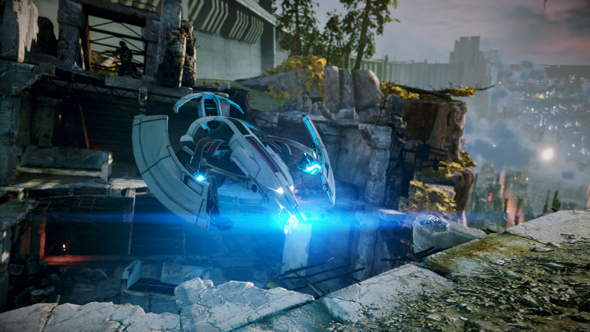
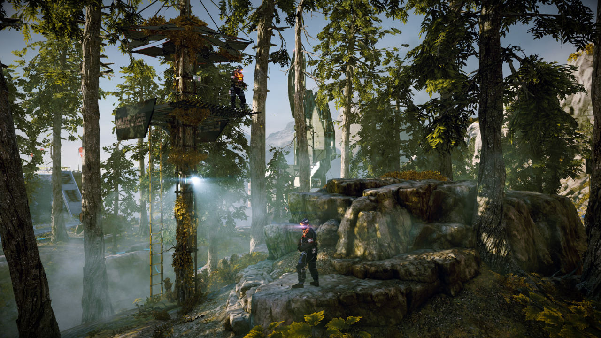
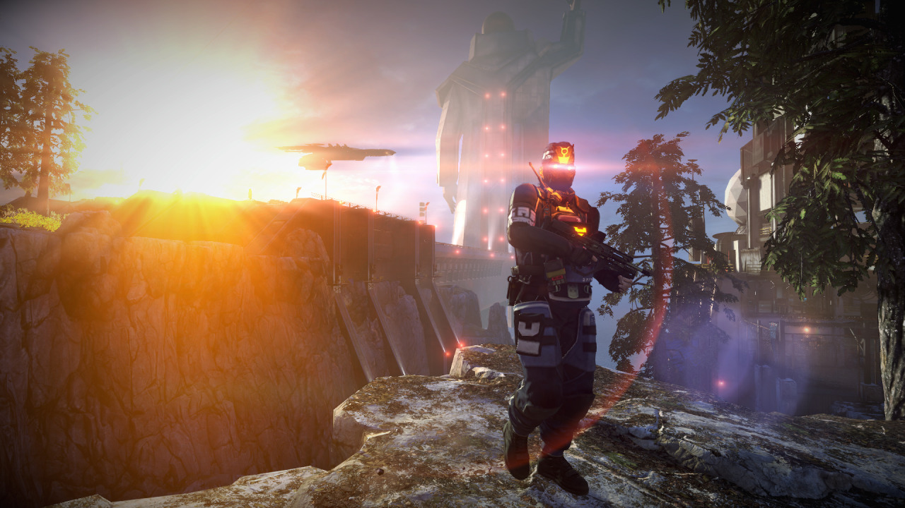
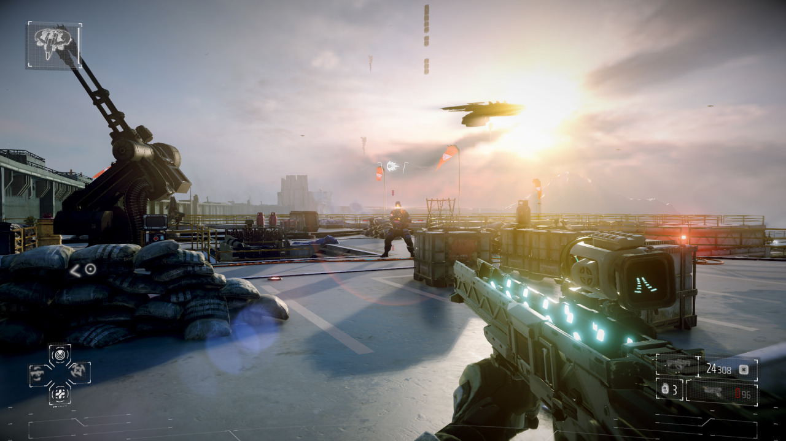
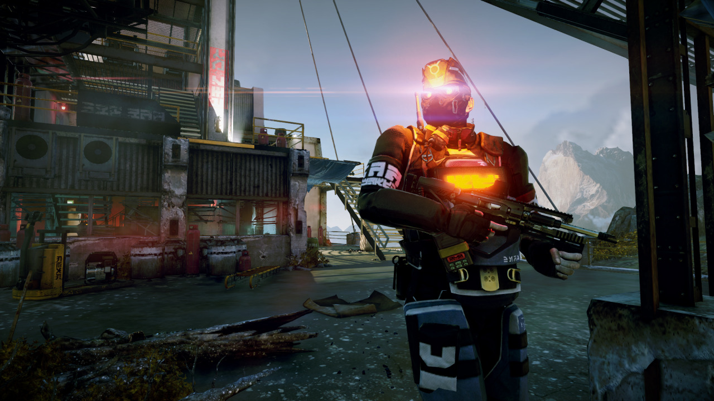
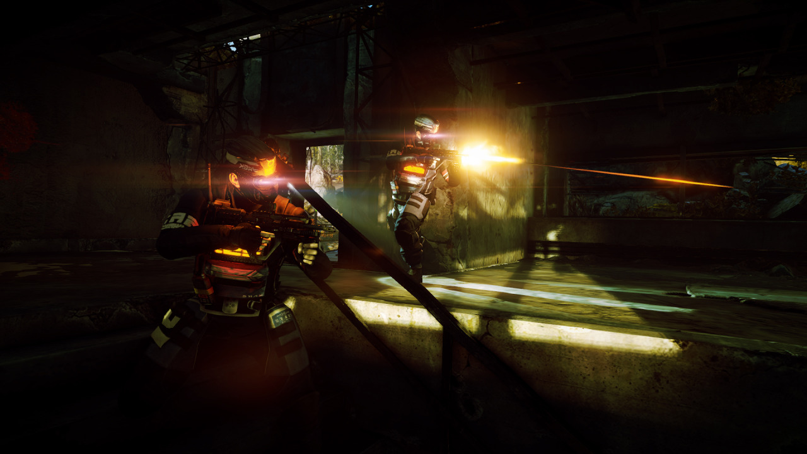
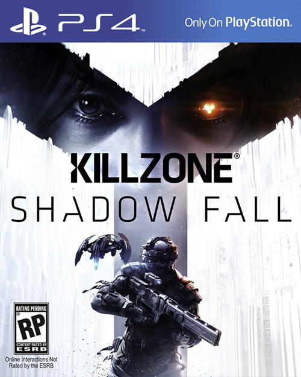

Sat, 15 Jun 2013 23:21:14 ·
i cant wait killzone shadow fall e3 trailer







I can’t wait…
Killzone Shadow Fall E3 trailer, box art, screensA new gameplay trailer for Killzone: Shadow Fall was featured at Sony’s E3 2013 press conference, this week, giving fans a glimpse of the game’s single-player campaign.